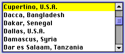

List Boxes and Frames
The list box control is a complete solution for creating scrolling lists. It provides for up to two embedded scroll bars and a scrolling list box which features a white background and a two-pixel-wide rectangular frame whose inside lines share the outside lines of the scroll bar(s). Figure 2-25 shows a list box in use.
List boxes can accept keyboard input for navigating within the list. The user can use the arrow keys to move through the list one item at a time in the direction of the arrow. Users can also select an item from the list by typing the beginning character or characters of its name; this technique is called type selection.
List boxes are not appropriate to provide choices in a limited range. Because the full range may not be visible all at once in a scrolling list, it's difficult for users to understand the scope of their choices. Sliders work very well for displaying a limited range of values and letting users choose their preference in the range. See "Sliders and Tick Marks" (page 31) for information about sliders.
The list box frame is available as a separate control so that non-standard list boxes can be made Appearance-compliant.
For more information about laying out list boxes in dialog boxes, see "List Box Layout" (page 82).